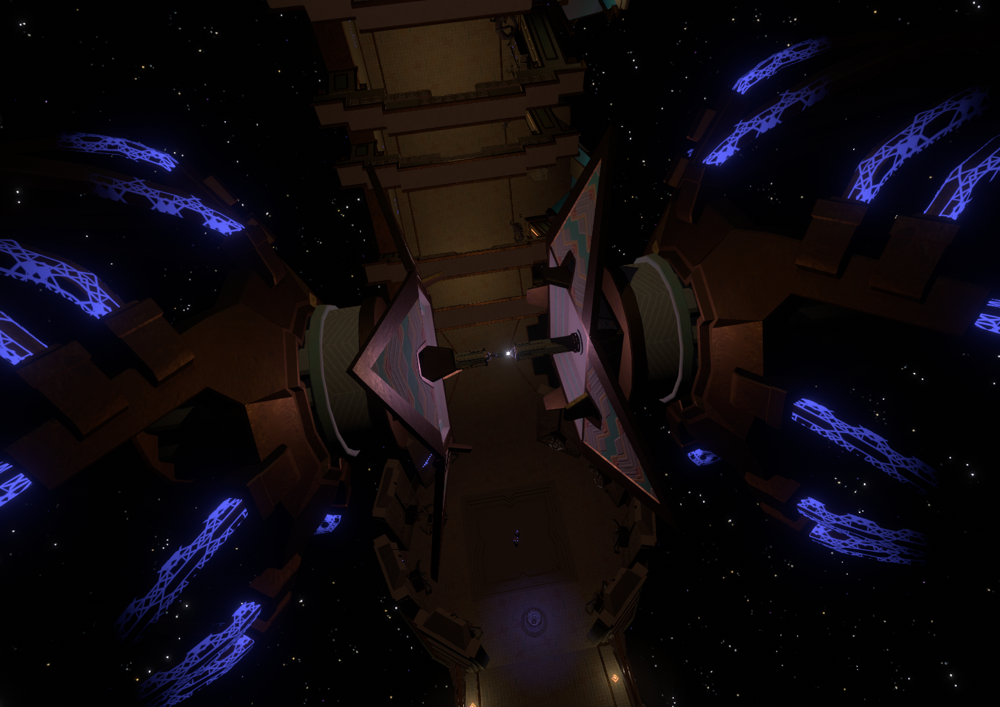
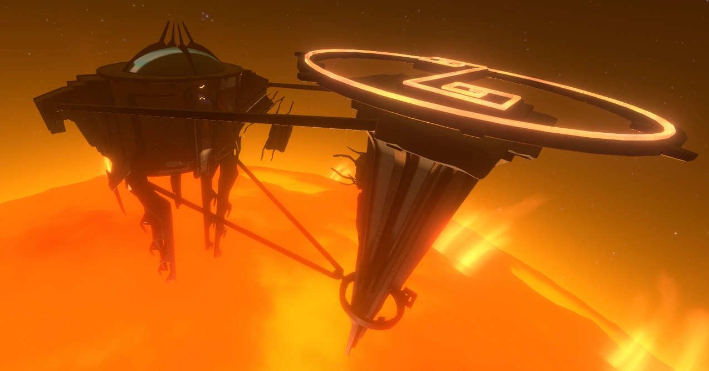
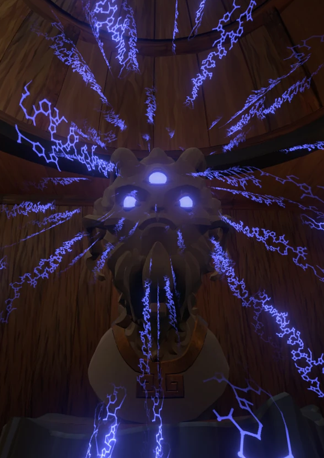
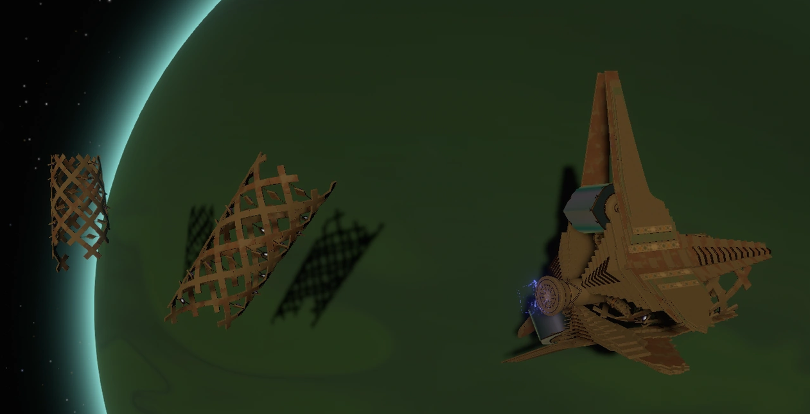

Le Projet Sablière Noire
Le presque Magnum Opus des Nomai

Le Projet Sablière Noire est un projet développé par les Nomai dans le but de trouver l'Œil de l'Univers. À
l'origine, ils avaient suivi son signal à bord de leur vaisseau. Toutefois, celui-ci s'est écrasé dans
Sombronce après leur arrivée dans le système solaire, les empêchant de poursuivre leur recherche. Ils ont donc
dû trouver une autre façon de localiser l'Œil.
Pour y arriver, les Nomai ont imaginé un système capable d'envoyer une sonde dans différentes
directions et de renvoyer les informations recueillies 22 minutes dans le passé. Cette idée vient de leurs
recherches sur la technologie de distortion, qui leur avaient permis de découvrir qu'il était possible de
faire arriver de la matière avant son départ. Ils ont voulu exploiter cette découverte à plus grande échelle
pour répéter les lancements de la sonde jusqu'à trouver l'Œil.
Le fonctionnement et ses composantes
Le Projet repose sur plusieurs installations et technologies qui permettent de rechercher l'Œil de l'Univers à travers des boucles temporelles.
Le noyau de distorsion avancé et la Station solaire
Le noyau de distorsion avancé est capable de renvoyer de l'information exactement 22 minutes dans le passé. Cependant, son fonctionnement nécessite une quantité d'énergie astronomique. Pour répondre à ce besoin, les Nomai ont construit la Station solaire, dont le rôle est de provoquer artificiellement une supernova. L'énergie libérée par l'explosion du Soleil devait alimenter le noyau et permettre au projet de fonctionner.

Les statues mémorielles et les masques

Les statues mémorielles ont été conçues pour enregistrer les souvenirs d'un individu ou les données d'un appareil. Elles sont reliées à des masques situés dans le Pojet Sablière Noire, qui permettent de conserver ces informations.
Lorsque le projet s'active, les informations enregistrées sont transmises 22 minutes dans le passé. Cela permet notamment de conserver les résultats des lancements précédents de la sonde et de les utiliser lors des boucles suivantes.
Le Lance-sonde orbital
Le Lance-sonde orbital est chargé de propulser une sonde dans l'espace afin de rechercher l'Œil de l'Univers. Son module de suivi enregistre les données recueillies pendant l'exploration et les transmet à une statue mémorielle. Ces informations permettent de déterminer les directions déjà explorées et d'en essayer de nouvelles lors des boucles suivantes.

Le but et les implications
Le fonctionnement du Projet Sablière Noire repose sur un processus qui se répète jusqu'à ce que l'Œil de l'Univers soit localisé :
- Lancer la sonde : le Lance-sonde orbital reçoit une commande et propulse la sonde dans une direction déterminée.
- Enregistrer les résultats : le module de suivi récupère les données de la sonde et les transmet à sa statue mémorielle.
- Déclancher une supernova : la Station solaire provoque l'explosion du Soleil afin de fournir l'énergie nécessaire au projet.
- Renvoyer les informations dans le passé : le noyau de distorsion avancé utilise l'énergie de la supernova pour transmettre les données 22 minutes dans le passé.
- Recommencer : le Lance-sonde orbital reçoit la nouvelle commande ainsi que les informations du futur, et tente une autre direction.
Les résultats
Malgré les efforts des Nomai, le Projet Sablière Noire n'a pas abouti. La Station solaire n'a jamais réussi à provoquer une supernova. La Nomai Pye avait relevé un changement infinitésimale à la surface du Soleil, à peine visible. Le Projet Sablière Noire n'a donc jamais pu être mis en marche de leur vivant.
En vient l'instant présent, où en fin de vie, le Soleil atteint naturellement la fin de sa vie et explose en supernova. Cette fois, l'énergie nécessaire a été fournie au Projet Sablière Noire, qui s'est activé automatiquement. La boucle temporelle a alors commencé à se répéter, permettant au Lance-sonde orbital d'explorer de nouvelles trajectoires.
Après 9 318 054 tentatives, la sonde a finalement localisé l'Œil de l'Univers. Le projet avait donc atteint son objectif, même si les Nomai n'ont jamais vécu assez longtemps pour en voir le résultat.